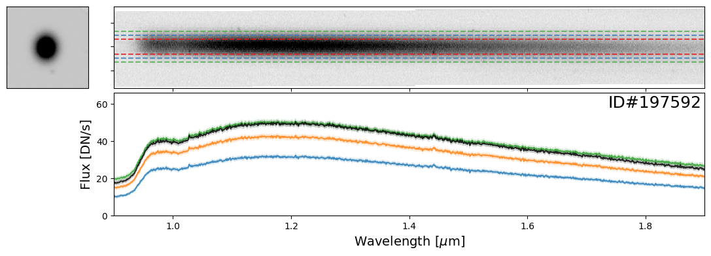
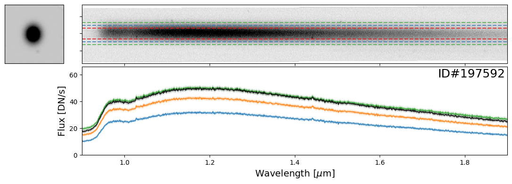

⚠️ EXECUTION WARNING
This notebook may not execute properly in the current environment.
Some cells may have failed during automated testing. Please review the notebook content and test manually before use.
Generated during CI/CD pipeline - some outputs may be incomplete or missing.
Roman Spectroscopy: Grism Spectral Extraction#
Kernel Information and Read-Only Status#
To run this notebook, please select the “Roman Calibration” kernel at the top right of your window.
This notebook is read-only. You can run cells and make edits, but you must save changes to a different location. We recommend saving the notebook within your home directory, or to a new folder within your home (e.g. file > save notebook as > my-nbs/nb.ipynb). Note that a directory must exist before you attempt to add a notebook to it.
Imports#
import asdf
import roman_datamodels as rdm
import astropy.io.fits as fits
import matplotlib.pyplot as plt
import numpy as np
import s3fs
from astropy.table import Table
from scipy.ndimage import rotate
from scipy.interpolate import interp1d
from matplotlib.patches import Circle, Rectangle
from astropy.nddata import Cutout2D
from itertools import cycle
from astropy.convolution import convolve
from astropy.visualization import simple_norm
from photutils.segmentation import detect_sources
%matplotlib inline
Introduction#
In this notebook, we demonstrate an example workflow one can follow to extract the grism spectra from Roman WFI images. We will use simulated grism data for this exercise and illustrate how to go from a full 2-D grism dispersed image to a 1-D spectrum for a source of interest.
Important Disclaimer: This workflow is vastly simplified for the purposes of demonstration. This does not represent the full functionality available from the Grism/Prism Data Processing System (GDPS), which is the pipeline being developed for reducing Roman WFI spectral data. In the limited demonstration showcased here, we will be making several simplifying assumptions, which will be highlighted by Notes throughout the notebook.
Initial Setup and Utility Functions#
Let’s begin by setting up a couple utility functions that will be used throughout the notebook:
def get_vmin_vmax(img, fac_neg=1.5, fac_pos=3):
"""
Returns a min-max value to scale images (when plotting)
"""
med, std = np.nanmedian(img), np.nanstd(img)
vmin = med - fac_neg * std
vmax = med + fac_pos * std
return vmin, vmax
def cutout_image(image, position, size, fill_value=0):
"""
Uses the astropy Cutout2D to cutout a part of the image
"""
return Cutout2D(image, position, size=size, mode="partial", fill_value=fill_value).data
Simulated Grism Spectroscopy Data#
For this demonstration, we will use the simulated grism images from Wang et al. (2022, ApJ, 928, 1), developed as part of the Roman High Latitude Spectroscopic Survey (HLSS) Grism Simulation Products. Please refer to their IRSA page for full details on the simulation. Briefly, these simulations cover an area of 4 sq. deg., across a redshift range of $0<z<3$. The simulation products have been designed to closely mimic future observations by incorporating survey parameters from the planned HLSS, such as detection limits, exposure times, roll angles, and dithering.
For this exercise, we provide the direct and grism images for one of the Roman detectors (WFI01) in the ASDF data format for Roman, along with a source catalog.
Loading the Simulated Data#
Let’s load the relevant files:
WFI direct image corresponding to the grism pointing to locate the on-sky source positions (ASDF format)
WFI grism image with the slitless spectra (ASDF format)
Input catalog for the simulated sources (FITS format)
fs = s3fs.S3FileSystem(anon=True)
asdf_dir_uri = 's3://stpubdata/roman/nexus/soc_simulations/tutorial_data/'
# Read in the direct image
asdf_file_uri = asdf_dir_uri + 'r0007601002004013001_0001_wfi01_f158_cal.asdf'
direct_asdf = rdm.open(fs.open(asdf_file_uri, 'rb'))
direct_img = direct_asdf.data
# Read in the grism image
asdf_file_uri = asdf_dir_uri + 'r0007601002004013002_0001_wfi01_grism_cal.asdf'
grism_asdf = rdm.open(fs.open(asdf_file_uri, 'rb'))
grism_img = grism_asdf.data
grism_err = grism_asdf.err
# Read in the catalog
asdf_file_uri = asdf_dir_uri + 'r0007601002004013001_0001_catalog.fits'
hdu = fits.open(asdf_file_uri, fsspec_kwargs={'anon':True})
catalog = Table(hdu[1].data)
Initial Quick Look at the Data#
Let’s first make a quick plot of the direct and dispersed images for visualization. We will also overlay the positions of the sources from the catalog.
Getting the Direct-to-Dispersed Mapping#
We need to know the mapping between the source position in the direct image and the corresponding spectral trace in the dispersed image. This transformation is part of the Roman “optical model” and will be included in the Roman calibration files, along with utility tools. However, since these tools are still under development, here we provide the spectral trace reference positions and tilts in the catalog (see the X_GRISM, Y_GRISM, and THETA_GRISM columns).
NOTE: The reference position of the spectra we provide is defined at 1.55 microns. We assume the wavelength dispersion of the Roman grism to be 11 Angstroms per pixel. WHile the dispersion varies slightly over the wavelength range, we ignore the effects for simplicity.
### Setup the figure
fig, (ax1, ax2) = plt.subplots(1, 2, figsize=(18, 9), dpi=75, sharex=True, sharey=True, tight_layout=True)
### Plot the direct image
vmin, vmax = get_vmin_vmax(direct_img)
ax1.imshow(
direct_img,
vmin=vmin,
vmax=vmax,
cmap=plt.cm.Greys,
origin="lower",
)
ax1.set_title("Direct Image", fontsize=18, fontweight=600)
### Plot the grism image
vmin, vmax = get_vmin_vmax(grism_img)
ax2.imshow(
grism_img,
vmin=vmin,
vmax=vmax,
cmap=plt.cm.Greys,
origin="lower",
)
ax2.set_title("Dispersed (Grism) Image", fontsize=18, fontweight=600)
### Overlay the source positions in the direct image
for i, entry in enumerate(catalog[catalog["mag_ROMAN_WFI_NIR_F146"] < 18]): # only show the bright objects
ax1.add_patch(
Circle(
(entry["X_IMAGE"], entry["Y_IMAGE"]),
radius=entry["A_IMAGE"] * 3.5,
facecolor="none",
edgecolor="r",
lw=1.5,
)
)
bbox = [50, 1200]
ax2.add_patch(Rectangle((entry["X_GRISM"]-bbox[0]/2, entry["Y_GRISM"]-bbox[1]/2), *bbox, angle=entry["THETA_GRISM"]-90, lw=0.8, facecolor="none", edgecolor='r'))
ax1.set_xlim(0, grism_img.shape[0])
ax1.set_ylim(0, grism_img.shape[1]);
Cutout of a 2-D Spectrum#
Let’s now pick an object and make a cutout of its 2-D spectrum. We will also rotate the spectra by its tilt (90 degrees) for visualization, which will make plotting them easier.
Note: The process of extracting a 2-D spectral cutout is highly simplified. The spectral traces typically require high-order rectification. For simplicity, we are skipping this step and only considering a rotational transformation. Also, please note that while scipy.ndimage.rotate() is convenient, it does not necessarily conserve flux, which is important for proper spectral measurements.
First, we write a function to perform our 2D extraction since this will be utilized again later.
def extract_2D_spectrum(xpix, ypix, theta, size_spatial, grism_img, grism_err, size_wavelength=1200):
"""
Cutout a 2D spectrum at the desired position for a given size (spatial and spectral dimensions)
This assumes the spectra are aligned along the y-axis of the dispersed image
The recommended size in the wavelength dimension is 1200 px
"""
### Define the extraction box
size = [size_spatial, size_wavelength]
### Use astropy's Cutout2D
### Fill value is set to 0 to avoid issues with rotate
flux2D = cutout_image(image=grism_img, position=(xpix, ypix), size=size[::-1], fill_value=0)
ferr2D = cutout_image(image=grism_err, position=(xpix, ypix), size=size[::-1], fill_value=0)
### Rotate the vertial spectral just for plotting purposes
flux2D = rotate(flux2D, theta)
ferr2D = rotate(ferr2D, theta)
return flux2D, ferr2D
Let’s pick a bright star as our test object – e.g., ID# 197462 in the catalog.
### Let's choose an object
entry = catalog[catalog["SOURCE_ID"]==197462][0]
### Cutout the 2D spectrum
flux2D, ferr2D = extract_2D_spectrum(entry["X_GRISM"], entry["Y_GRISM"], entry["THETA_GRISM"], size_spatial=entry["A_IMAGE"] * 10, grism_img=grism_img, grism_err=grism_err)
### Also cutout a direct image stamp
stamp = rotate(cutout_image(image=direct_img, position=(entry["X_IMAGE"], entry["Y_IMAGE"]), size=flux2D.shape[0]), 90)
### Make a quick plot
fig, axes = plt.subplots(1, 2, figsize=(8, 2), width_ratios=[1, 15], dpi=100, tight_layout=True)
vmin, vmax = get_vmin_vmax(stamp)
axes[0].imshow(stamp, origin="lower", vmin=vmin, vmax=vmax, cmap=plt.cm.Greys)
vmin, vmax = get_vmin_vmax(flux2D)
axes[1].imshow(flux2D, origin="lower", vmin=vmin, vmax=vmax, cmap=plt.cm.Greys)
for axis in axes:
axis.xaxis.set_visible(False)
axis.yaxis.set_visible(False)
Now that we have a 2D cutout of the spectrum, we need to assign wavelength information.
Set up the Wavelength Array#
Recall that the provided position for the spectral mapping traces to 1.55 microns and the spectral dispersion for the Roman grism spectrum is 11 Angstroms per pixel (approximately; see caveats above). With this information we can define a wavelength axis for the extracted spectrum.
def get_wavelength_info(flux2D):
"""
Setup spatial and wavelength coordinate arrays
"""
grism_dispersion = 0.0011 # micron / px (approximately)
grism_zeropoint = 1.55 # micron
idx2D, idy2D = np.indices(flux2D.shape)
idx2D = idx2D - flux2D.shape[0] / 2
idy2D = idy2D - flux2D.shape[1] / 2
wave2D = idy2D * grism_dispersion + grism_zeropoint
return idx2D, wave2D
### Make a quick plot
fig, axes = plt.subplots(1, 2, figsize=(10, 2), width_ratios=[1, 7], dpi=100, tight_layout=True)
vmin, vmax = get_vmin_vmax(stamp)
axes[0].imshow(stamp, origin="lower", vmin=vmin, vmax=vmax, cmap=plt.cm.Greys)
axes[0].xaxis.set_visible(False)
axes[0].yaxis.set_visible(False)
vmin, vmax = get_vmin_vmax(flux2D)
idx2D, wave2D = get_wavelength_info(flux2D=flux2D)
axes[1].pcolormesh(wave2D, idx2D, flux2D, vmin=vmin, vmax=vmax, cmap=plt.cm.Greys)
axes[1].set_xlim(0.9, 2.0)
axes[1].set_ylim(-40, 40)
axes[1].set_xlabel("Observed Wavelength [$\\mu$m]", fontsize=15);
Now, we move to the 1-D spectral extraction.
Box Extraction#
The simplest and most straightforward way to extract a 1-D spectrum from our 2-D cutout is to use the “Box extraction” method, by defining a window around the trace and summing up the flux along the spatial dimension. The dimension of the box window has a significant impact on the extracted spectrum – it needs to be large enough to capture all the flux from the source, but not too large to include excessive amounts of noise which would degrade the quality of the 1-D spectrum. As an initial approach, we can define the size of the extraction box based on the size of the source measured from the direct image. We’ll use the semi-major axis length from the catalog, scaled by a scalar factor, to explore how the window size affects the extracted 1-D spectrum.
def do_box_extraction(idx2D, wave2D, flux2D, ferr2D, extract_size):
"""
Perform a box extraction
"""
cond = np.abs(idx2D[:,0]) < extract_size / 2
wave1D = np.nanmean(wave2D, axis=0)
flux1D = np.nansum(flux2D[cond, :], axis=0)
ferr1D = np.sqrt(np.nansum(ferr2D[cond, :]**2, axis=0))
return wave1D, flux1D, ferr1D
Let’s use a range of box sizes for the 1D extraction and see how it performs for our target.
fig, axes = plt.subplots(2, 2, figsize=(8, 4), width_ratios=[1, 6], height_ratios=[1, 2], dpi=100)
fig.subplots_adjust(left=0.05, right=0.95, top=0.95, bottom=0.15, wspace=0.05, hspace=0.05)
axes = axes.flatten()
axes[2].set_visible(False)
# Plot the direct image stamp
vmin, vmax = get_vmin_vmax(stamp)
axes[0].imshow(stamp, origin="lower", vmin=vmin, vmax=vmax, cmap=plt.cm.Greys)
axes[0].xaxis.set_visible(False)
axes[0].yaxis.set_visible(False)
# Plot the 2D spectrum
vmin, vmax = get_vmin_vmax(flux2D)
axes[1].pcolormesh(wave2D, idx2D, flux2D, vmin=vmin, vmax=vmax, cmap=plt.cm.Greys)
axes[1].set_xlim(0.9, 2.0)
[label.set_visible(False) for label in axes[1].get_yticklabels() + axes[1].get_xticklabels()]
color_cycle = cycle(plt.cm.Set1.colors)
for factor in [1, 2, 3, 4, 5]:
color = next(color_cycle)
wave1D, flux1D, ferr1D = do_box_extraction(idx2D=idx2D, wave2D=wave2D, flux2D=flux2D, ferr2D=ferr2D, extract_size=entry["A_IMAGE"]*factor)
axes[3].errorbar(wave1D, flux1D, yerr=ferr1D, marker='o', color=color, lw=1.5, mew=0, markersize=0, elinewidth=0.2, capsize=0, alpha=0.8)
axes[1].hlines([-entry["A_IMAGE"]*factor/2, entry["A_IMAGE"]*factor/2], *axes[1].get_xlim(), color=color, lw=1.5, ls='--', alpha=0.8)
axes[3].set_xlim(axes[1].get_xlim());
As noted above, the size of the extraction box is crucial. If it is too small, it may miss flux from the true source; if it is too large, it may include excessive noise, reducing the overall quality of the resulting spectrum. Therefore, we turn to the optimal extraction method.
Optimal Extraction#
Horne (1986, PASP, 98, 609) provides an algorithm to optimally extract a 1-D spectrum. To run the optimal extraction, we need the source 1-D profile in the spatial dimension, that we can obtain from the WFI direct image.
First, let’s write up a quick function to implement the Horne+86 algorithm.
def do_optimal_extraction(idx2D, wave2D, flux2D, ferr2D, stamp):
"""
Performs optimal extraction following Horne+86
"""
# Generate a 1D light profile for the source from the direct image
stamp = stamp - np.median(stamp)
prof1D = np.nansum(stamp, axis=1)
prof1D = prof1D / np.sum(prof1D)
prof2D = np.repeat(prof1D, flux2D.shape[1]).reshape(len(prof1D), flux2D.shape[1])
# Apply some basic masking
mask = ~np.isfinite(flux2D) | ~np.isfinite(ferr2D) | (ferr2D<=0)
flux2D = np.ma.masked_array(flux2D, mask=mask)
ferr2D = np.ma.masked_array(ferr2D, mask=mask)
# Compute the relevant terms for the Horne+86 algorithm
ivar2D = 1 / ferr2D**2
num2D = ivar2D * prof2D * flux2D
den2D = ivar2D * prof2D**2
# Compute the final wavelength and flux arrays
wave1D = np.mean(wave2D, axis=0)
flux1D = np.ma.sum(num2D, axis=0) / np.ma.sum(den2D, axis=0)
ferr1D = np.ma.sqrt(1 / np.ma.sum(den2D, axis=0))
return wave1D, flux1D.filled(np.nan), ferr1D.filled(np.nan)
Let’s apply this optimal extraction to our target and compare the two extraction methods.
fig, axes = plt.subplots(2, 2, figsize=(8, 4), width_ratios=[1, 6], height_ratios=[1, 2], dpi=100)
fig.subplots_adjust(left=0.05, right=0.95, top=0.95, bottom=0.15, wspace=0.05, hspace=0.05)
axes = axes.flatten()
axes[2].set_visible(False)
# Plot the direct image stamp
vmin, vmax = get_vmin_vmax(stamp)
axes[0].imshow(stamp, origin="lower", vmin=vmin, vmax=vmax, cmap=plt.cm.Greys)
axes[0].xaxis.set_visible(False)
axes[0].yaxis.set_visible(False)
# Plot the 2D spectrum
vmin, vmax = get_vmin_vmax(flux2D)
axes[1].pcolormesh(wave2D, idx2D, flux2D, vmin=vmin, vmax=vmax, cmap=plt.cm.Greys)
axes[1].set_xlim(0.9, 2.0)
[label.set_visible(False) for label in axes[1].get_yticklabels() + axes[1].get_xticklabels()]
color_cycle = cycle(plt.cm.Set1.colors)
for factor in [2, 3, 4]:
color = next(color_cycle)
wave1D, flux1D, ferr1D = do_box_extraction(idx2D=idx2D, wave2D=wave2D, flux2D=flux2D, ferr2D=ferr2D, extract_size=entry["A_IMAGE"]*factor)
axes[3].errorbar(wave1D, flux1D, yerr=ferr1D, marker='o', color=color, lw=1.5, mew=0, markersize=0, elinewidth=0.2, capsize=0, alpha=0.8)
axes[1].hlines([-entry["A_IMAGE"]*factor/2, entry["A_IMAGE"]*factor/2], *axes[1].get_xlim(), color=color, lw=1.5, ls='--', alpha=0.8)
wave1D, flux1D, ferr1D = do_optimal_extraction(idx2D=idx2D, wave2D=wave2D, flux2D=flux2D, ferr2D=ferr2D, stamp=stamp)
axes[3].errorbar(wave1D, flux1D, yerr=ferr1D, color='k', marker='o', lw=1.5, mew=0, markersize=0, elinewidth=0.2, capsize=0, alpha=0.8)
axes[3].set_xlim(axes[1].get_xlim());
Masking Neighboring Sources in Direct Cutouts#
It is essential to properly mask neighboring sources before generating the 1-D light profile for the target. Failing to do so will result in an inaccurate 1-D spectrum. To address it, we can use a photutils source detection function on the stamp and apply it to mask out any other sources within the region.
While our target does not require this step, it will be necessary for other sources discussed below.
grism_img_thresh = np.std(grism_img)
grism_img_skybkg = np.median(grism_img) / 2
def mk_segmented_stamp(data, skybkg=grism_img_skybkg, thresh=grism_img_thresh*0.8):
if skybkg is None:
skybkg = np.median(data)
if thresh is None:
thresh = np.std(data) / 2
segm = detect_sources(data-skybkg, thresh, npixels=5).data
data_segm = data.copy()
idx = [i // 2 for i in segm.shape]
data_segm[(segm!=segm[*idx]) & (segm>0)] = 0
return data_segm
Full Workflow: Grism Image to Extracted 1-D Spectrum#
Now that we have demonstrated all the steps, let’s combine them into a single workflow that performs the full 1-D extraction and apply it multiple sources.
def do_full_extraction(entry, direct_img, grism_img, grism_err, size_factor=10, box_size_factor=None, plot=True):
"""
Performs the full 1D spectral extraction workflow for a given object provided as a row from the catalog
Requires X_IMAGE, Y_IMAGE, A_IMAGE, X_GRISM, Y_GRISM columns from the catalog
Also requires the direct and grism images
Optionally produces plots
"""
# Start by extracting the 2D spectrum
size_spatial = np.clip(entry["A_IMAGE"] * size_factor, 10, 500)
flux2D, ferr2D = extract_2D_spectrum(entry["X_GRISM"], entry["Y_GRISM"], entry["THETA_GRISM"], size_spatial=size_spatial, grism_img=grism_img, grism_err=grism_err)
# Generate a stamp for the source from the direct image and also mask other objects in the stamp
stamp = rotate(cutout_image(image=direct_img, position=(entry["X_IMAGE"], entry["Y_IMAGE"]), size=flux2D.shape[0]), 90)
stamp_masked = mk_segmented_stamp(data=stamp)
# Generate the wavelength info
idx2D, wave2D = get_wavelength_info(flux2D=flux2D)
# Generate the 1D spectrum with optimal extraction
wave1D, flux1D, ferr1D = do_optimal_extraction(idx2D=idx2D, wave2D=wave2D, flux2D=flux2D, ferr2D=ferr2D, stamp=stamp_masked)
# (optionally) Generate a plot to show of the spectrum and also box extraction results
if plot:
# Setup the subplots
fig, axes = plt.subplots(2, 2, figsize=(12, 4), width_ratios=[1, 6], height_ratios=[2, 3], dpi=100)
fig.subplots_adjust(left=0.05, right=0.95, top=0.95, bottom=0.15, wspace=0.05, hspace=0.05)
axes = axes.flatten()
axes[2].set_visible(False)
# Plot the direct image stamp
vmin, vmax = get_vmin_vmax(stamp_masked)
axes[0].imshow(stamp_masked, origin="lower", vmin=vmin, vmax=vmax, cmap=plt.cm.Greys)
axes[0].xaxis.set_visible(False)
axes[0].yaxis.set_visible(False)
# Plot the 2D spectrum
vmin, vmax = get_vmin_vmax(flux2D[int(flux2D.shape[0] / 4) : int(flux2D.shape[0] * 3 / 4), :])
axes[1].pcolormesh(wave2D, idx2D, flux2D, vmin=vmin, vmax=vmax, cmap=plt.cm.Greys)
axes[1].set_xlim(0.9, 1.9)
[label.set_visible(False) for label in axes[1].get_yticklabels() + axes[1].get_xticklabels()]
# Plot box extraction
color_cycle = cycle(plt.cm.Set1.colors)
_flux1D_for_ylim = []
if box_size_factor is not None:
for factor in np.atleast_1d(box_size_factor):
color = next(color_cycle)
_wave1D, _flux1D, _ferr1D = do_box_extraction(idx2D=idx2D, wave2D=wave2D, flux2D=flux2D, ferr2D=ferr2D, extract_size=entry["A_IMAGE"]*factor)
axes[3].errorbar(_wave1D, _flux1D, yerr=_ferr1D, marker='o', lw=1.5, mew=0, markersize=0, elinewidth=0.2, capsize=0, alpha=0.8)
axes[1].hlines([-entry["A_IMAGE"]*factor/2, entry["A_IMAGE"]*factor/2], *axes[1].get_xlim(), color=color, lw=1.5, ls='--', alpha=0.8)
_flux1D_for_ylim = np.append(_flux1D_for_ylim, _flux1D[(np.abs(wave1D-1.5) < 0.4) & (_flux1D > 0)])
# Plot Optical extraction
axes[3].errorbar(wave1D, flux1D, yerr=ferr1D, color='k', marker='o', lw=1.5, mew=0, markersize=0, elinewidth=0.2, capsize=0, alpha=0.8)
axes[3].set_xlim(axes[1].get_xlim())
# Plot decorations and axis limits
flux1D_for_ylim = flux1D[(np.abs(wave1D-1.5) < 0.4) & (flux1D > 0)]
flux1D_for_ylim = np.append(flux1D_for_ylim, _flux1D_for_ylim)
ylim = np.nanpercentile(flux1D_for_ylim, [1, 100])
axes[3].set_ylim(0, ylim[1]*1.3)
axes[3].set_ylabel("Flux [DN/s]", fontsize=14)
axes[3].set_xlabel("Wavelength [$\\mu$m]", fontsize=14)
axes[3].text(0.995, 0.98, f"ID#{entry['SOURCE_ID']:d}", va="top", ha="right", color="k", fontsize=18, transform=axes[3].transAxes)
return {"stamp": stamp,
"flux2D": flux2D, "ferr2D": ferr2D, "idx2D": idx2D, "wave2D": wave2D,
"wave1D": wave1D, "flux1D": flux1D, "ferr1D": ferr1D}
Examples of Bright Stars#
Let’s start with some examples of bright stars, IDs: 46656, 197387, 197396, 197413, 197418, 197462, 197484, 197503, 197585, 197590, 197592, 197594
star_IDs = [197387, 197396, 197413, 197418, 197462, 197484, 197503, 197585, 197590, 197592, 197594]
for star_ID in star_IDs[::3]: # Only showing a subset; increase as needed
entry = catalog[catalog["SOURCE_ID"]==star_ID][0]
do_full_extraction(entry, direct_img, grism_img, grism_err, box_size_factor=[2, 3, 4], plot=True)
 

Examples of Galaxies#
Now let’s take a look at some galaxies. Here you can experiment with whichever objects you want from the source catalog. For demonstration purposes, we have provided a few select examples that highlight interesting spectral features.
galaxy_IDs = [19942, 115897, 83060, 59378, 14068]
for source_ID in galaxy_IDs:
entry = catalog[catalog["SOURCE_ID"]==source_ID][0]
do_full_extraction(entry, direct_img, grism_img, grism_err, size_factor=25, box_size_factor=[2, 3, 4], plot=True)
Examples of Nearby Emission Line Galaxies#
Here are a couple examples of emission line galaxies that are close enough to see the emission lines from the neighboring object in the extracted 2-D spectrum.
pairs_IDs = [171608, 19942, 35048, 147993]
for source_ID in pairs_IDs:
entry = catalog[catalog["SOURCE_ID"]==source_ID][0]
do_full_extraction(entry, direct_img, grism_img, grism_err, size_factor=25, box_size_factor=[2, 3, 4], plot=True)
Example of Overlapping Spectra#
Here is an example of two spectra, one from a star (ID#197738) and another from a bright, high-redshift emission line galaxy (ID#166231), that happen to overlap.
In this case, it is imperative to perform a “decontamination” to accurately recover the true flux of the individual source. This is a non-trivial process and this functionality will be available in the Roman GDPS pipeline.
entry_str = catalog[catalog["SOURCE_ID"]==197738][0]
entry_gal = catalog[catalog["SOURCE_ID"]==166231][0]
stamp = rotate(cutout_image(image=direct_img, position=(entry_str["X_IMAGE"], entry_str["Y_IMAGE"]), size=[800, 100]), 90)
flux2D = rotate(cutout_image(image=grism_img, position=(entry_str["X_GRISM"], entry_str["Y_GRISM"]-400), size=[800, 100]), entry_str["THETA_GRISM"])
fig, (ax1, ax2) = plt.subplots(2, 1, figsize=(12,3.5), dpi=75, tight_layout=True)
vmin, vmax = get_vmin_vmax(stamp)
ax1.imshow(stamp, origin="lower", vmin=vmin, vmax=vmax, cmap=plt.cm.Greys)
ax1.scatter(stamp.shape[1]/2 - 1, stamp.shape[0]/2 - 1, color="r", marker="x", lw=2, s=100)
ax1.scatter(stamp.shape[1]/2 - 1 + (entry_gal["Y_IMAGE"]-entry_str["Y_IMAGE"]),
stamp.shape[0]/2 - 1 - (entry_gal["X_IMAGE"]-entry_str["X_IMAGE"]), color="r", marker="x", lw=2, s=100)
vmin, vmax = get_vmin_vmax(flux2D)
ax2.imshow(flux2D, origin="lower", vmin=vmin, vmax=vmax, cmap=plt.cm.Greys)
for ax in [ax1, ax2]:
ax.xaxis.set_visible(False)
ax.yaxis.set_visible(False)

do_full_extraction(entry_str, direct_img, grism_img, grism_err, size_factor=25, box_size_factor=[2, 3, 4], plot=True)
do_full_extraction(entry_gal, direct_img, grism_img, grism_err, size_factor=40, box_size_factor=[2, 3, 4], plot=True);
Additional Resources#
About this Notebook#
Author: Vihang Mehta
Updated On: 2025-09-30